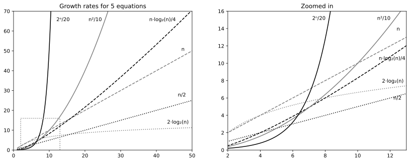

3.4 Order of growth and time functions
Imagine that you are a bookworm and you have 10,000 books divided into 100 bookshelfs. Now you want to sort all your books so that you can search for them quickly (using binary search of course). You use one of the sorting algorithms from Chapter 2 and notice it takes one hours to sort the books in one shelf.
- How long time will it take to sort all 10,000 books?
- If you buy a sorting robot that is 100 times faster than you are, will you finish sorting books in one hour?
The sorting algorithms from Chapter 2 all have a running time proportional to n^2 where n is the number of books. Using our new big-O notation, the algorithms have O(n^2) time complexity. This means that if you double the size of the input, the running time will quadruple. If you multiply the input size by 100, the running time will be 100^2 = 10,000 times longer. So, it will take 10,000 hours for you to sort all the books, and your very expensive sorting robot will still take 100 hours.
So maybe it is not worth the money to buy a faster robot, but instead to try to find a sorting algorithm that has better algorithmic complexity.
Getting a faster computer
How much larger problems can a faster computer solve in the same amount of time? Or, equivalently, how much larger problems can we solve if we spend more time?
A more formal way of saying “linear search takes O(n) time”, is that if T(n) is a time function that computes the exact running time of the worst case input of size n, then the growth rate of T(n) is O(n).
Determining T(n) exactly for any algorithm is complicated, and requires a multitude of assumptions about the hardware running it. But as a thought experiment we can assume something like T(n)=3n+5 for an algorithm, using some unit of time, and use that to determine how large problems can be solved in a given timeframe. Table 3.1 shows this for some example time functions.
| Time function (T(n)) | 1 ms | 10 ms | 100 ms | 1 second |
|---|---|---|---|---|
| 2\cdot\log_2(n) | 32 | 10^{15} | 10^{150} | 10^{1500} |
| n/2 | 20 | 200 | 2,000 | 20,000 |
| n | 10 | 100 | 1,000 | 10,000 |
| n\cdot\log_2(n)/4 | 11 | 66 | 453 | 3,408 |
| n^2/10 | 10 | 31 | 100 | 316 |
| 2^n/20 | 7 | 11 | 14 | 17 |
This table illustrates many important points. The two equations n and n/2 are both linear; only the value of the constant factor has changed. In both cases, if we spend ten times more work we can solve a ten times larger problem.
The table also illustrates why a factor two speed-up is not that impressive compared to a speed-up from linear time to logarithmic time. If we managed to double the speed of the linear function again and again, a hundred times, the logarithmic function would still get more done even in a modest time frame of a single second. For say an hour, the difference would be much more extreme.
The logarithmic growth rate could be the time to find a book in your sorted bookshelf using binary search (recall Section 1.3). In this case we search 32 books in one millisecond. But in 10 ms we can search in 10^{15} books, and in 100 ms we can search a library with more books than there are atoms in the universe.
The quadratic algorithm, n^2/10, does not receive nearly as great an improvement from the longer working time as a linear algorithm. Instead of an improvement by a factor of hundred (if we let it run for 100 times longer), the improvement is only the square root of that: \sqrt{100}=10.
The algorithm in between linear and quadratic, T(n) = n\log_2(n)/4, improves almost like the linear one, but not quite. Its growth rate is sometimes called linearithmic or log-linear, and it is a common growth rate for many algorithms shown later on in this book (for example the Mergesort algorithm in Section 4.2). In big-O notation, this is the complexity class O(n \log n).
Note that something special happens in the case of the exponential algorithm, T(n) = 2^n/20. It can only be used to solve very small problems, and if you spend 10 times longer it can still only solve a problem of size n+3 (to be precise, it is n + \log_2(10)). The increase in problem size for an exponential algorithm is by a constant addition, not by a multiplicative factor. If you spend 1 second instead of 1 millisecond you can still only solve a problem of size 17, and it would take you 15 hours to solve a problem of size 30. A problem of size 50 will take more than 1,700 years! Thus, exponential growth is radically different than the other growth rates shown in the table.
In summary, buying a faster computer can have some benefits, but they are of a different nature than an algorithmic speed-up, going from a slow to a faster complexity class.
Plotting and tabulating growth rates
Another way of comparing different growth rates is to draw a graph. Figure 3.1 plots the six growth rate equations from Table 3.1 earlier. As you can see from the graph, the difference between a linear algorithm with cost T(n) = n and a quadratic algorithm with cost T(n) = n^2/10 becomes tremendous as n grows. From n > 10 the quadratic algorithm becomes slower than the linear, and this difference increases as n grows. This is despite the fact that n^2/10 has a smaller constant factor than n.

The graph also shows that the equation T(n) = n\log_2(n)/4 grows somewhat more quickly than the linear equations, but not nearly so quickly as the quadratic equation. In fact, n^a always grows faster than both \log(n)^b and \log(n^b), for all constants a,b>1. We also see that exponential algorithms are prohibitively expensive for even modest values of n. Note that a^n grows faster than n^b for all constants a,b>1.
Finally, Table 3.2 shows the difference between the growth rates when n becomes larger and larger. Once again, we see that the growth rate has a tremendous effect on the resources consumed by an algorithm.
| Growth rate | n=10 | 100 | 1,000 | 10^4 | 10^5 |
|---|---|---|---|---|---|
| 2\cdot\log_2(n) | 7 | 13 | 20 | 27 | 33 |
| n/2 | 5 | 50 | 500 | 5,000 | 50,000 |
| n | 10 | 100 | 1,000 | 10,000 | 100,000 |
| n\cdot\log_2(n)/4 | 8 | 166 | 2,491 | 33,219 | 415,241 |
| n^2/10 | 10 | 1,000 | 100,000 | 10,000,000 | 10^9 |
| 2^n/20 | 51 | 6\cdot 10^{28} | 5\cdot 10^{300} | \cdots | \cdots |